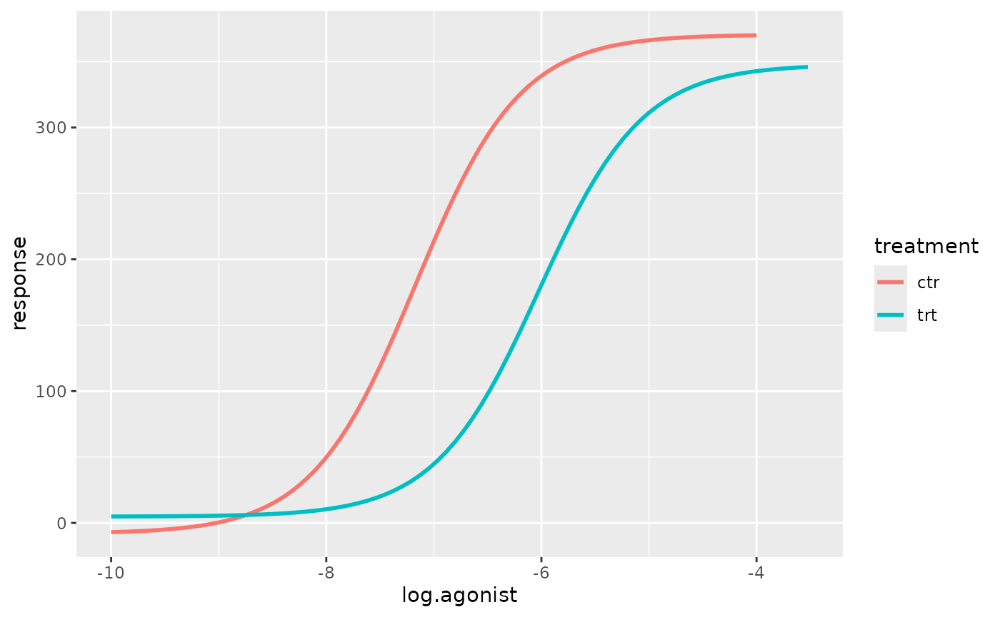
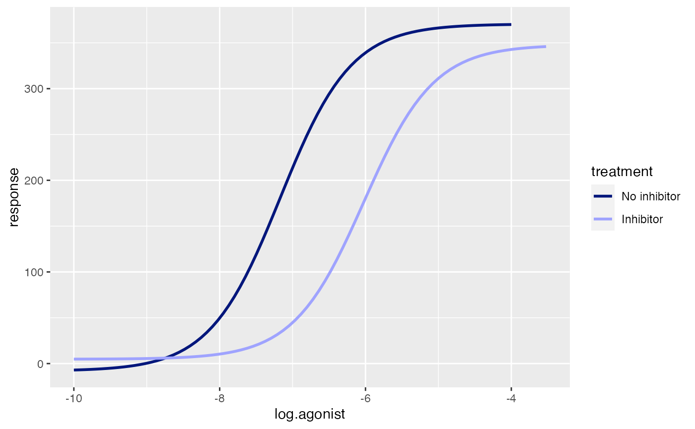
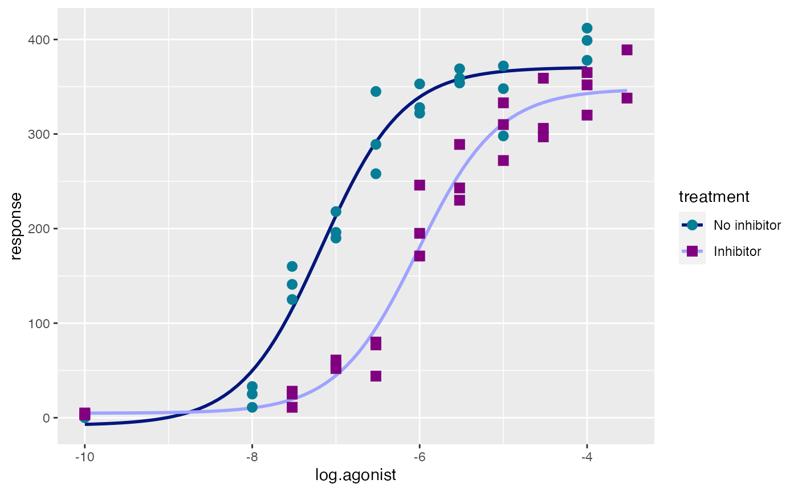
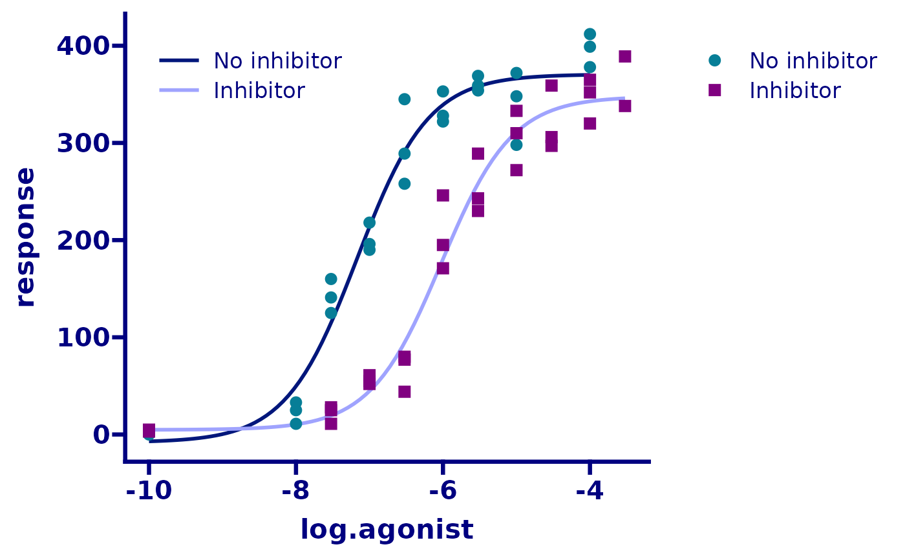
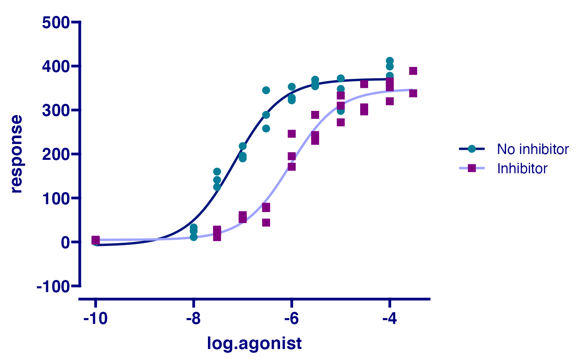
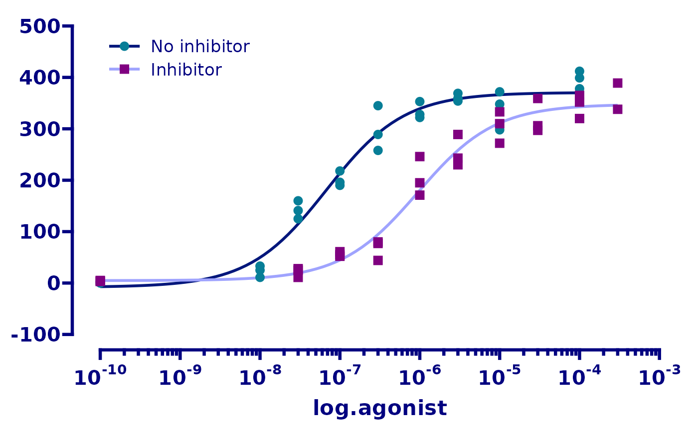
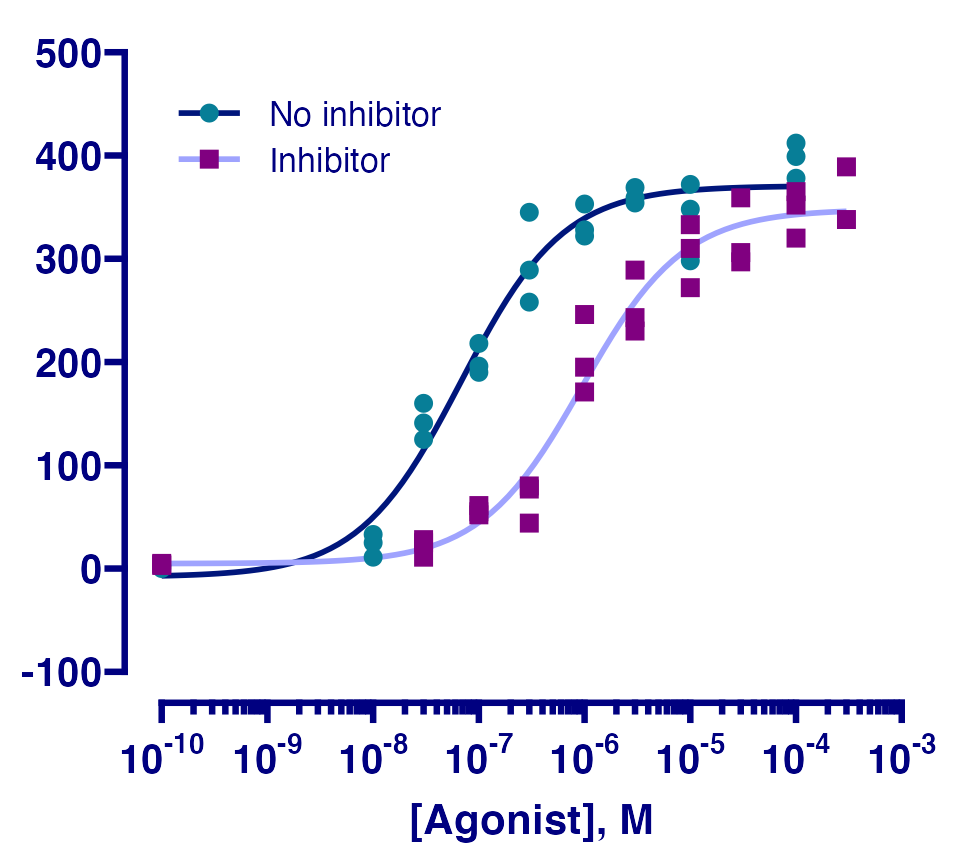

In this vignette we will recreate a graph which was used in the advertising material for GraphPad Prism 8. The graph shows the ‘response’ of e.g. a cell surface receptor when you add increasing concentrations of an agonist molecule in the presence or not of a competitive inhibitor. The underlying data set comes from one of the XY dose response tutorials included with Prism.

Prism dose reponse curve
Preparation
First, we load the necessary packages.
# for the graph
library(ggplot2)
library(ggprism)
library(ggnewscale)
# just for manipulating the data.frame
library(dplyr)
#>
#> Attaching package: 'dplyr'
#> The following objects are masked from 'package:stats':
#>
#> filter, lag
#> The following objects are masked from 'package:base':
#>
#> intersect, setdiff, setequal, union
library(tidyr)Then we prepare the data.
# construct the data.frame, log10 transform the agonist concentration
# convert the data.frame to long format, then remove any rows with NA
df <- data.frame(
agonist = c(1e-10, 1e-8, 3e-8, 1e-7, 3e-7, 1e-6, 3e-6, 1e-5, 3e-5, 1e-4, 3e-4),
ctr1 = c(0, 11, 125, 190, 258, 322, 354, 348, NA, 412, NA),
ctr2 = c(3, 33, 141, 218, 289, 353, 359, 298, NA, 378, NA),
ctr3 = c(2, 25, 160, 196, 345, 328, 369, 372, NA, 399, NA),
trt1 = c(3, NA, 11, 52, 80, 171, 289, 272, 359, 352, 389),
trt2 = c(5, NA, 25, 55, 77, 195, 230, 333, 306, 320, 338),
trt3 = c(4, NA, 28, 61, 44, 246, 243, 310, 297, 365, NA)
) %>%
mutate(log.agonist = log10(agonist)) %>%
pivot_longer(
c(-agonist, -log.agonist),
names_pattern = "(.{3})([0-9])",
names_to = c("treatment", "rep"),
values_to = "response"
) %>%
filter(!is.na(response))
head(df)
#> # A tibble: 6 x 5
#> agonist log.agonist treatment rep response
#> <dbl> <dbl> <chr> <chr> <dbl>
#> 1 0.0000000001 -10 ctr 1 0
#> 2 0.0000000001 -10 ctr 2 3
#> 3 0.0000000001 -10 ctr 3 2
#> 4 0.0000000001 -10 trt 1 3
#> 5 0.0000000001 -10 trt 2 5
#> 6 0.0000000001 -10 trt 3 4Adjusting data-related elements
Now we begin constructing the plot, layer-by-layer. The order of each step below is important and if you mix them around the final plot will not appear as it should.
First, we’ll just give the ggplot() function our data.
# plot the log10(agonist concentration) vs the response
p <- ggplot(df, aes(x = log.agonist, y = response))
Looking at the original plot we can see that the dose response curves underlie the data points, so we’ll start by fitting these curves using geom_smooth().
We need to define a formula for geom_smooth() to use. Here we will define a four-parameter log-logistic model manually. See this notebook for more info on dose response curves in R.
# define model (note x and ec50 are swapped around because ec50 is already -ve)
dose_resp <- y ~ min + ((max - min) / (1 + exp(hill_coefficient * (ec50 - x))))
# fit separate curves to the data from the two treatment types
p <- p + geom_smooth(
aes(colour = treatment),
method = "nls", formula = dose_resp, se = FALSE,
method.args = list(start = list(min = 1.67, max = 397, ec50 = -7, hill_coefficient = 1))
)
p
The colours of the curves in the original plot are not in any colour scheme available in Prism. Therefore we will just colour them manually. While we’re at it we can give the two treatment groups more informative names in the legend.
# apply a manual colour scale to the curves
p <- p + scale_colour_manual(
labels = c("No inhibitor", "Inhibitor"),
values = c("#00167B", "#9FA3FE")
)
p
Now we can plot the actual data using geom_point. We’ll change the point shape and colour depending on the treatment type. To use a separate colour scale for the points versus the curves we can use the new_scale_colour() function from ggnewscale. new_scale_colour() must be before geom_point() otherwise the new colour scales will not work.
# reset the colour scale, add the data points, then use a new colour scale
p <- p + ggnewscale::new_scale_colour() +
geom_point(aes(colour = treatment, shape = treatment), size = 3) +
scale_colour_prism(
palette = "winter_bright",
labels = c("No inhibitor",
"Inhibitor")
) +
scale_shape_prism(
labels = c("No inhibitor",
"Inhibitor")
)
p
Adjusting theme elements
First, we’ll apply theme_prism.
# use the Winter Bright theme and make the size of all plot elements larger
p <- p + theme_prism(palette = "winter_bright", base_size = 16)
p
Next we’ll change the y axis limits and appearance. The guide_prism_offset() axis guide will shorten the axis line to the outer-most tick marks. This is similar to what is available in the “Frame and Origin” tab in Prism.
# adjust the axis limits, major tick positions, and axis guide
p <- p + scale_y_continuous(
limits = c(-100, 500),
breaks = seq(-100, 500, 100),
guide = "prism_offset"
)
p
Then we’ll change the x axis limits and appearance. This step is somewhat complicated by 2 things:
- We are working with log10 transformed data and want the tick marks to appear as they do in the original plot. First we define the major ticks with the
breaksandlimitsarguments. Then we use theguide_prism_offset_minor()axis guide to add minor tick marks. Finally, we use theminor_breaksargument and give it a vector that defines the x axis position of each individual minor tick mark. - We want the tick labels to be in the format 10-7 but at the moment they are in the format -7. To do this we feed the
labelargument a function which defines a math expression will take the number -7 and convert it into the expression 10-7.
Very complicated and probably not necessary in real life! But in this vignette the goal is to recreate the original plot as closely as possible.
# adjust the axis limits, major and minor tick positions, axis guide, and
# axis text (aka. label) appearance
p <- p + scale_x_continuous(
limits = c(-10, -3),
breaks = -10:-3,
guide = "prism_offset_minor",
minor_breaks = log10(rep(1:9, 7)*(10^rep(-10:-4, each = 9))),
labels = function(lab) {
do.call(
expression,
lapply(paste(lab), function(x) bquote(bold("10"^.(x))))
)
}
)
p
Finally, we will fix the axis titles and move the legend on top of the plot instead of beside it.
# remove the y axis title and legend title, change the x axis title and
# move the legend to the top left
p <- p + theme(
axis.title.y = element_blank(),
legend.title = element_blank(),
legend.position = c(0.05, 0.95),
legend.justification = c(0.05, 0.95)
) +
labs(x = "[Agonist], M")
p
And that’s it! Our ggplot graph is almost identical to the original.
Original plot
Plot source code
Here is the complete code for the plot (remember the order of layers is important).
dose_resp <- y ~ min + ((max - min) / (1 + exp(hill_coefficient * (ec50 - x))))
ggplot(df, aes(x = log.agonist, y = response)) +
geom_smooth(
aes(colour = treatment),
method = "nls", formula = dose_resp, se = FALSE,
method.args = list(start = list(min = 1.67, max = 397, ec50 = -7, hill_coefficient = 1))
) +
scale_colour_manual(labels = c("No inhibitor", "Inhibitor"),
values = c("#00167B", "#9FA3FE")) +
ggnewscale::new_scale_colour() +
geom_point(aes(colour = treatment, shape = treatment), size = 3) +
scale_colour_prism(palette = "winter_bright",
labels = c("No inhibitor", "Inhibitor")) +
scale_shape_prism(labels = c("No inhibitor", "Inhibitor")) +
theme_prism(palette = "winter_bright", base_size = 16) +
scale_y_continuous(limits = c(-100, 500),
breaks = seq(-100, 500, 100),
guide = "prism_offset") +
scale_x_continuous(
limits = c(-10, -3),
breaks = -10:-3,
guide = "prism_offset_minor",
minor_breaks = log10(rep(1:9, 7)*(10^rep(-10:-4, each = 9))),
labels = function(lab) {
do.call(
expression,
lapply(paste(lab), function(x) bquote(bold("10"^.(x))))
)
}
) +
theme(axis.title.y = element_blank(),
legend.title = element_blank(),
legend.position = c(0.05, 0.95),
legend.justification = c(0.05, 0.95)) +
labs(x = "[Agonist], M")